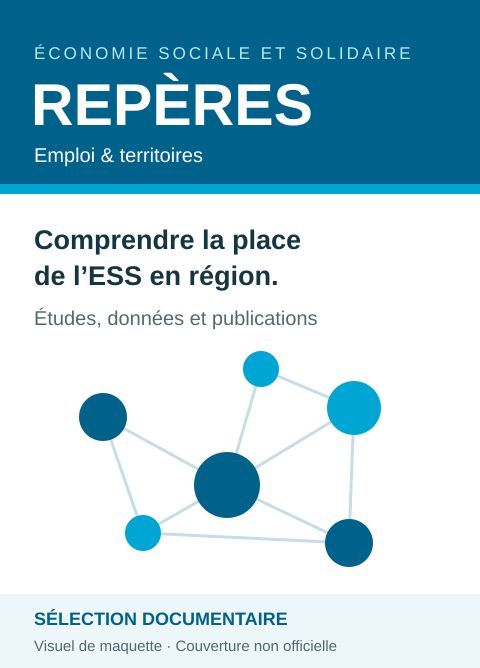
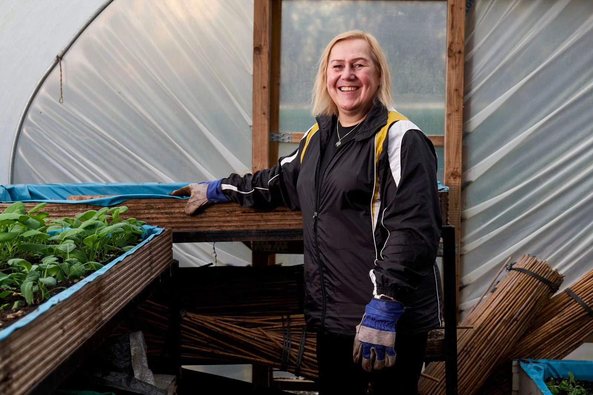
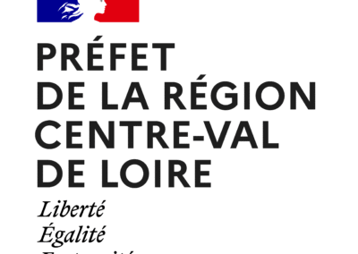
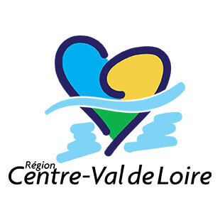

À la une · Observatoire
Les chiffres clés de l’emploi de l’ESS en Centre-Val de Loire
Le panorama régional pour comprendre la place de l’ESS dans l’économie et l’emploi.
Consulter la publicationEnsemble, en Centre-Val de Loire
Nous représentons, accompagnons et faisons grandir l’ESS en région. Pour une économie qui place l’humain et les territoires au cœur de son projet.
Découvrir la CRESS et ses missions
Trouvez le bon point de départ.
Des solutions pour agir
De la première idée au développement de votre structure, trouvez les ressources et les interlocuteurs adaptés à votre besoin.
Un besoin précis ? Un projet à partager ? Échangeons ensemble.
Toute notre offre de servicesL’ESS près de chez vous
Explorez l’économie sociale et solidaire à l’échelle de votre département et de votre intercommunalité.
Centre-Val de Loire 6 départements, une dynamique commune
Votre territoire à la loupe
Démonstration : sélection locale des fiches existantes. Le clic ouvre un aperçu dans le concept ; aucune donnée en temps réel.
Consulter la fiche du territoireOrléans MétropoleEmploi, établissements et place de l’ESS : les données de l’Observatoire sur votre territoire.
Observatoire & ressources
Études, publications et fiches territoriales : des connaissances à partager pour faire avancer l’ESS.
Recherche et filtres de démonstration sur une sélection locale. Les résultats ouvrent un aperçu ; la publication complète reste accessible par un lien externe explicite.

Le panorama régional pour comprendre la place de l’ESS dans l’économie et l’emploi.
Consulter la publicationLa région en mouvement
Adhérer, c’est agir
Faites entendre votre voix, participez à la dynamique du réseau et contribuez au développement de l’ESS en Centre-Val de Loire.


Ces logos illustrent les soutiens de la CRESS ; ils ne constituent pas un soutien à cette candidature indépendante.
Les quatre photographies d’illustration ci-dessous remplacent les photographies et visuels éditoriaux repris du site CRESS. Sources et licence vérifiées le 23 novembre 2026.
Photo : Centre for Ageing Better, Pexels nº 7851312. Licence Pexels. Compression WebP et recadrage à l’affichage. Cette personne n’est pas présentée comme une salariée ou une représentante de la CRESS.
Photo : Zen Chung, Pexels nº 5529592. Licence Pexels. Photo d’illustration du jardinage ; elle ne représente pas les Jardins de la Voie Romaine.
Photo : Luis Quintero, Pexels nº 2774556. Licence Pexels. Photo d’illustration, sans lien revendiqué avec la CORESS.
Photo : Mozzapics ., Pexels nº 38282734. Licence Pexels. Photo d’illustration, sans lien revendiqué avec le Salon des Maires ou une collectivité du Centre-Val de Loire.
Composition SVG originale créée pour ce concept de José Giovinazzo. Elle remplace la couverture reproduite du site CRESS. Ce visuel n’est pas une couverture officielle ; le lien conduit à la véritable publication.
France GeoJSON, Grégoire David ; tracés IGN / Admin Express COG, édition 2018, noms et codes INSEE, millésime 2018. Le projet source renvoie à la Licence ouverte. Extraction des six départements et conversion SVG.
Manrope, © 2018 The Manrope Project Authors, SIL Open Font License 1.1, licence jointe. Pictogrammes SVG dessinés pour la maquette.
Logo CRESS/ESS et logos du Préfet de région, de la Région Centre-Val de Loire et de l’Union européenne : site institutionnel CRESS. Ces marques restent celles de leurs titulaires. Elles n’expriment aucun soutien à cette candidature indépendante et ne sont pas couvertes par la licence des photographies.
La licence Pexels autorise l’utilisation gratuite et la modification des photographies sur un site. Les crédits sont conservés volontairement. Aucun soutien des personnes photographiées n’est suggéré. Ces images restent soumises aux conditions de leur licence ; elles ne sont pas dans le domaine public.